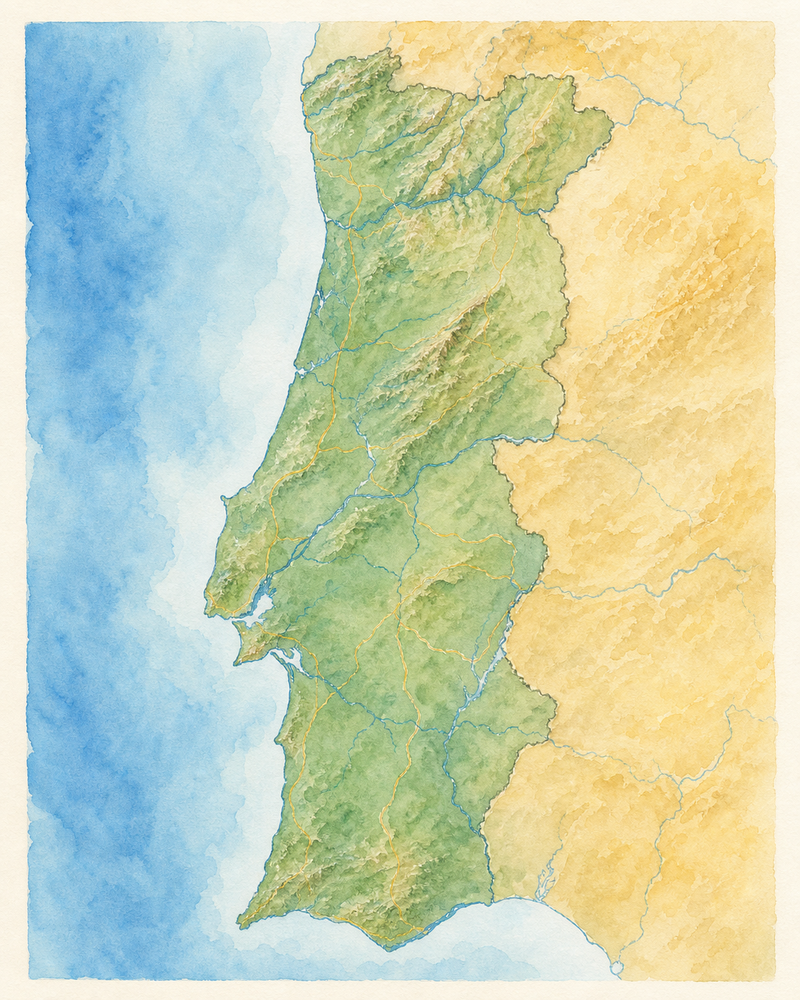

A geografia das nossas histórias
Territórios da Raia
Cada par raiano guarda personagens, memórias e cenários capazes de dar origem a um livro.
Do Minho ao Guadiana, percorra as duas margens da nossa coleção editorial.
Duas cidades, um território literário
Passe pelos pontos do mapa e escolha um par raiano para descobrir o seu património, a sua história, os seus sabores e as vozes que inspiram a ficção.

PORTUGAL
ESPAÑA